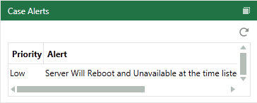

Alerts are short notices, for example, a notice that a server will be taken offline for service. The following figure shows a typical alert in the Eclipse Case Details Dashboard.

This page contains the following content:
To add alerts to a case:
Gather needed information for the alert.
Start Eclipse Administration and log in as an Eclipse administrator.
On the Case Management ribbon, select Case Management > Case Management.
In the Case Management screen, select the needed managing client and case.
Click the Alerts tab. (If it is not visible, click on the right side of the screen’s tabs.)
Click New Alert.
Define the new alert:
Enter an alert name to identify the nature of the alert. If several alerts will be present for users, give some consideration to naming consistency.
Enter the alert details in as concise a manner as possible. The message is limited to 500 characters.
Select a start date and time. The alert will not appear in Eclipse until that date/time.
Select an ending date and time. The alert will be removed from Eclipse after that date/time.
|
|
Time format will match the format selected for Windows. To change time, click on a time component (such as the hour) and type the needed detail. |
Select a priority level, which ranges from Low to Critical.
When all entries are complete, click OK. The alert will be available to all users assigned to the case, as indicated by the open lock, , on the Alerts tab.
To restrict an alert to certain review groups:
Click the alert’s button.
Select the groups that should have access to the alert, then click OK.
|
|
To make an alert available to all groups that are currently defined for the case, click Select All. The alert will be unavailable for groups added after this selection (unless you add them). |
Repeat this procedure to configure other alerts.
Inform users that alerts may be present and they should check for alerts in the Eclipse Case Details Dashboard whenever logging into Eclipse.
To modify an alert:
Start Eclipse Administration and log in as an Eclipse administrator.
On the Case Management ribbon, select Case Management > Case Management.
On the Case Management window, select the needed managing client and case.
Click the Alerts tab. (If it is not visible, click on the right side of the window’s tabs.)
Click next to the alert to be revised and make changes in the New Alert dialog box. Refer to Add Case Alerts for details on this dialog box.
If needed, restrict the alert to certain review groups:
Click the Security (lock) button (whether it is open or closed) corresponding to the form being revised.
Select or clear groups as needed, then click OK.
Notify users of the changes that have been made.
To delete an alert:
Click the Alerts tab. (If it is not visible, click on the right side of the screen’s tabs.)
Click next to the alert to be deleted.
In response to the confirmation message, click OK.
Notify users of the changes that have been made.